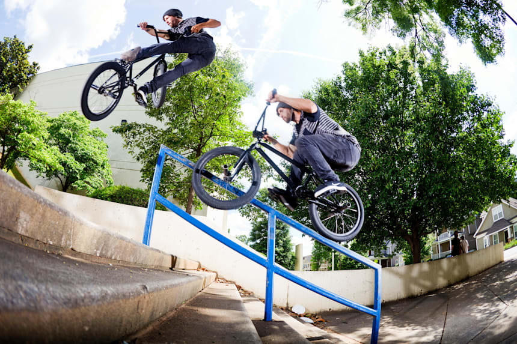
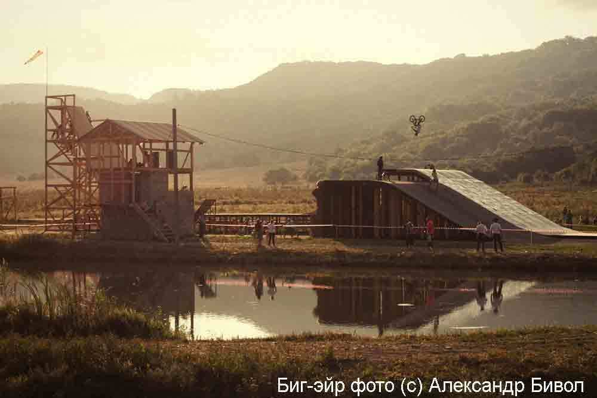

Дисциплина, в которой на грунтовой трассе длиной не менее 300м проводятся гонки на время. Трасса должна состоять как минимум из трёх виражей и четырёх прямых, на которых расположены препятствия в виде бугров различной конфигурации. Старт дается с рампы (стартовой горы) высотой 1,5-8 м. В заезде одновременно участвуют восемь спортсменов. Во время квалификации первые 4 спортсмена проходят в следующий раунд, и так до самого финала.
Правила гонки идентичны гонке - «Классик». Та же трасса, только разрешается использовать велосипеды с колёсами до 26 дюймов.
Эстафетная гонка состоит из 4-х этапов. В гонке стартует 4 спортсмена (3 мужчины + 1 женщина). Гонщики каждой команды стартуют в единой форме. Гонка начинается с квалификационных заездов гонки на время. Команды, показавшие время с 1 по 4 место выходят в финал. В финале стартуют 4 команды. Гонщик каждой команды должен проехать круг (свой этап) и передать эстафету своему партнеру.
В гонке фиксируется время прохождения трассы. Трассу проходит каждый гонщик по одному. Побеждает гонщик показавший наилучшее время прохождения трассы.
Выступление участников соревнований оценивается по сложности, оригинальности и точности исполнения различных акробатических фигур исполненных в фазе полёта. Соревнования могут проводиться как в виде преодоления специально сооруженных препятствий, так и на рампе.
Дисциплина, в которой спортсмены проводят соревнования на специально созданных искусственных трассах (скейт-парках). Препятствия, как правило, состоят из граней, вылетов, перил, трапеций, трамплинов расположенных в определённой последовательности.
Дисциплина, в которой спортсмен катается в U – образной рампе высотой около 4 метров. Спортсмен скатывается с верхнего края рампы, набирает скорость и высоко вылетает с другого края рампы, в полёте выполняя различные трюки.
Это фрирайд в городской среде, где в качестве препятствий используются деревья, перила, стены, контейнеры - всё, что может встретиться на улице. Дисциплина, в которой участник соревнований преодолевает естественные препятствия и совершает различные прыжки, стараясь оторвать оба колеса от земли без помощи трамплина или рампы. Соревнования по стрит проводятся в местах, где можно разместить сооружения, имитирующие естественные уличные препятствия. В молодёжной среде это самая популярная дисциплина.
Суть дисциплины заключается в том, чтобы на велосипеде исполнять различные трюки на плоской поверхности, нередко балансируя на одном колесе.Эту дисциплину можно сравнить с хип-хопом или брейк-дансом, её ещё называют «танцами на велосипеде».
Дисциплина, в которой спортсмены совершают прыжки на грунтовой трассе, где расположена серия трамплинов высотой 0,5 – 2 м. Во время прыжка в фазе полёта спортсмен исполняет различной сложности акробатические фигуры (трюки). Выступление оценивается по сложности и точности их исполнения.
Дисциплина «биг-эйр» похожа на дёрт, лишь с той разницей, что вместо серии прыжков участник соревнований совершает одиночные прыжки с огромного трамплина. Стартовая гора располагается на высоте более 10 метров, что позволяет спортсмену пролетать расстояние 7-13 метров.
